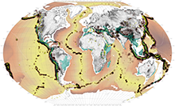

Ecological Cartography?
Like most contemporary atlases the world maps below show the global, geographic distribution of certain subjects. For the purposes of cross-referencing each map's subject to the overarching issue of biodiversity, the 35 hotspots are consistently notated with colored shading on each map. (NB; the most recently designated 36th hotspot (The North American Coastal Plain) is yet to be added to this series of maps). Without trying to be encyclopedic or compete with orthodox atlases, we have determined the list of thematic world maps by choosing topics we believe to be connected to the general issue of global biodiversity. Each map is accompanied by a short explanatory text and references for the data sources.
Just as determining the themes for the world maps is a curatorial question, so too is which projection to use when unfolding the three-dimensional earth onto a two-dimensional plane. Since Ptolemy (c C.E. 150) first attempted it, projection has been the bane of cartography. Because every map is a projection of a curved surface onto a flat plane, every two dimensional map involves distortion. This distortion can be of distance, direction, shape, or area. A certain projection—and there are now over 200 to choose from—can preserve one of these qualities but only at the expense of the others.
Because cartographic representation is about "making worlds" different projections can have different cultural and ideological implications. 1 Notoriously, the Mercator projection, dating from 1569, situates Europe at the center of the world. It puffs up the developed world, lowers the equator and turns Greenland into a behemoth rivaling Africa. For these reasons it is seen by some as a continual recapitulation of the era of Eurocentric imperialism from whence it originally came. In the 20th century, various projections were created to replace the Mercator. Notably, the Gall Stereographic, Robinson, Eckert IV, Fuller, and Goode Homolosine, all of which have advantages and disadvantages.2
Created by Dr. Arno Peters in 1973 the so called 'Peters projection' has been touted as a postmodern alternative to Mercator. The Peters projection is faithful to area and thus claimed to rectify Mercator's distortions but as it did so, it stretched the continents, so much so that its critics described this politically correct world as looking like wet underwear hung on a line. 3 Most atlases choose the Winkel tripel projection, but in this atlas we have chosen the Goode Homolosine as our mainstay. Although it comes in segments and warps at its edges, the Homolosine lays out the world most proportionately. In exchange for its terrestrial accuracy the homolosine does however subdivided the oceans and so when the subject matter of the map is related to marine environments we revert to the Winkel tripel projection.
If debates about projection seem antiquated it is because portraying a dynamic world as a static two-dimensional image is itself antiquated. Every map is out-of-date from the very moment it is drafted. As we move into an age of global positioning systems (GPS), remote sensing and real time visualization with the increasing ability to cheaply stream data to personal computers, the old problem of distortion in two-dimensional maps will largely absolve itself. Indeed, mapping's future — what we are here calling ecological cartography — lies not in static two-dimensional images but in the temporal flow of the fourth. As such the bigger project that this atlas points to is a web-based platform that tracks the evolution of the hotspots, if not all of the world's 867 ecoregions in real time.
Earth System
Seismic Activity
Atmospheric Currents

Ocean Currents

Biomes

Ecoregions

Anthromes

Threatened Mammals

Protected Areas

Biological Hotspots

Hotspots: Conservation Targets

Ecoregions: Conservation Targets

Soils
Croplands

Meat Map
Land Degradation

The Tropics

Deforestation

Rivers & Wetlands

Health of Waters
Access to Water

Evolution of Urbanization: Pre-Modern Era
Evolution of Urbanization: Modern Era

Megastructures
Population Pressure

Cities in Hotspots

Energy

Nuclear Energy
Climate Change

Sea Level Rise

Environmental Displacement
Conflict & Corruption

Conflict & Displacement

Biodiversity Planning
Conservation Spending

Corporate Wealth

Environmental Performance
Landscape Intelligence

Ecotourism

Genetic Stock
Religion

Paradise & Utopia
Global Landscape Connectivity Projects

World Park
1 J. Brian Harley, "Cartography, Ethics and Social theory," Cartographica 27, no. 2 (1990): 1-23.
2 A good summary comparison table can be found at http://www.radicalcartography.net/index.html?projectionref (accessed June 1, 2016).
3 For a summary discussion of the Peters projection as a cultural icon and cartographic controversy see Dhananjayan Sriskandarajah, "Long Underwear on a Line: 30 Years of Carto-controversy," Geography 88, no. 3 (2003): 236-244.